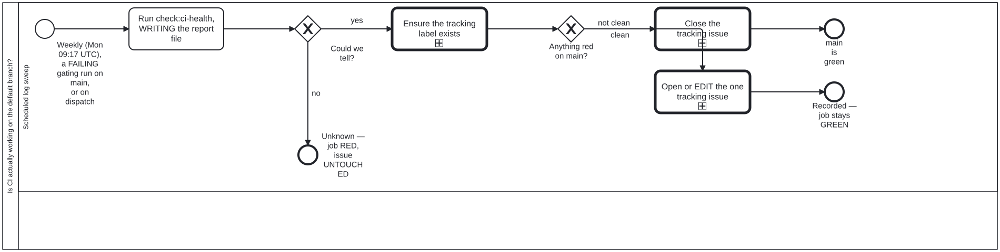

Generated from
cat-harness/processes/sdlc/ci-health-watch.bpmnbygen-processes-viz.ts— do not edit here. All processes
Process_CiHealth · strict · 4 step(s)
Is CI actually working on the default branch: record each workflow’s state on one tracking issue, and fail the job only when the state could not be determined. A WORKFLOW’S OUTCOME IS INVISIBLE FROM A CHECKOUT. Bean xom7: one workflow here fired on every push to main and FAILED ALL 30 TIMES OVER TWO MONTHS with nothing in the repository saying so. This is the backstop.
WEEKLY, NOT DAILY, and the cadence is an argument rather than a default: the defect is “nobody noticed for two months”, not “nobody noticed for a day”, and the session-start sweep already covers every day somebody is working. A weekly run bounds the blind spot to seven days without turning the tracking issue into a feed.
Could we tell? IS NOT SIMPLY THE EXIT CODE, and that is the subtlety worth drawing. bun exits 1 on an uncaught exception as well as on a live failure, so exit 1 alone does not separate “found something red” from “crashed”. The REPORT FILE separates them: --out writes it before any exit path, so a genuine red always has one and a crash before that point does not. Exit 1 with no report is reclassified as unknown. Without that, a crash would open a tracking issue quoting a stale file.
THE THIRD STATE IS THE WHOLE POINT, AND IT IS THE ONLY ONE THAT FAILS THE JOB. Verified 2026-09-20 by reading the if: guards: unknown runs exit 1; a finding does NOT. A repository in trouble leaves this workflow GREEN and speaks through the tracking issue, while a sweep that could not look turns the job red. That inversion is deliberate and is invisible from the run list, which is the argument for drawing it.
ONE TRACKING ISSUE, EDITED IN PLACE, never a comment and never a second issue — a feed nobody reads is the failure mode a watchdog invites. On unknown the issue is left UNTOUCHED: not closed, not opened, not edited. Closing it would assert the thing the sweep just failed to establish.
Ensure the tracking label exists sits AFTER Could we tell? and before the split, because both issue paths need the label — the clean path filters on it too, and on a repository where nothing has ever gone wrong it would not otherwise exist. It is skipped on unknown, where neither path runs and a label hiccup must not be what fails the job.

| lane | role | what it does here |
|---|---|---|
| Scheduled log sweep | build-pipeline |
Named a ‘sweep’ but every path through it writes something — the report file, the tracking label, and the issue itself (opened, edited or closed) — and keeping all three in one lane is what makes ‘one tracking issue, edited in place’ enforceable: a write split across lanes would leave two different actors able to touch the same issue with no ordering between them. |
Every one of the 4 step(s) is documented.
| step | lane | skill / sub-process | what it does |
|---|---|---|---|
Run check:ci-health, WRITING the report fileTask_Check |
Scheduled log sweep | ci-health |
Run check:ci-health –out, writing the report file before any exit path. Exit 0 clean, 1 live failures, 2 could not check. bun also exits 1 on an uncaught exception, so an exit 1 with no report file is a crash and is treated as could-not-check. |
Ensure the tracking label existsTask_Label |
Scheduled log sweep | ci-health |
Create the ci-health label with –force so it exists before either issue path runs — the close path filters on it too, and on a repository that has never had a finding it would not exist yet. Skipped on an unknown verdict. |
Close the tracking issueTask_Close |
Scheduled log sweep | ci-health |
Clean: close the open ci-health issue, if any, saying why (main is clean). Runs only on a clean verdict — on unknown the issue is left untouched and the job fails instead, because could-not-check is never rendered as clean. |
Open or EDIT the one tracking issueTask_Track |
Scheduled log sweep | ci-health |
Findings: EDIT the one open issue labelled ci-health if there is one, otherwise create it, with the report as the body. One issue edited in place, never a new issue or a comment per run, so the tracking issue never becomes a feed. |
Every one of the 2 decision(s) is documented.
| decision | what decides it | branches |
|---|---|---|
Could we tell?GW_Determined |
Asked of the verdict output that the check step of .github/workflows/ci-health.yml writes, not of the raw exit code. check:ci-health exits 0 clean, 1 live failure(s), 2 could not check; an exit 1 with no report file is a crash and is reclassified as could-not-check, as is any other code. no is verdict == ‘unknown’: the last step runs exit 1 and no issue step runs, so the tracking issue is left untouched. yes is verdict != ‘unknown’, the guard on the label step and so on both issue paths. |
no → Unknown — job RED, issue UNTOUCHED yes → Ensure the tracking label exists |
Anything red on main?GW_Finding |
Asked of the same verdict, once it is known. clean is verdict == ‘clean’ (exit 0): the open ci-health issue, if there is one, is closed saying main is clean. not clean is verdict == ‘red’ (exit 1 with a report): the one open issue labelled ci-health is edited in place with the report as its body, or created if there is none. Neither branch fails the job — a red main speaks through the issue, not through this workflow’s status. |
clean → Close the tracking issue not clean → Open or EDIT the one tracking issue |